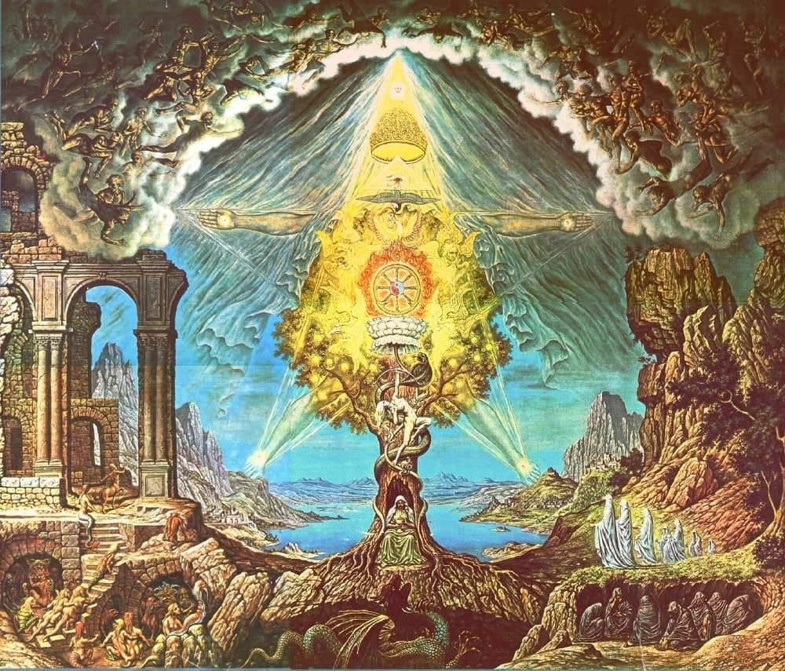
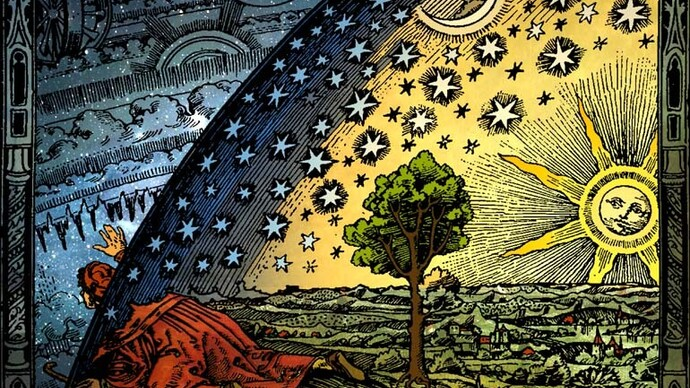
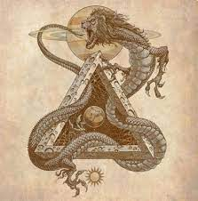

O que seria a Gnose?
A gnose, do grego gnosis, significa, conhecimento. No entanto, não se trata de um conhecimento comum, como o que se aprende na escola ou em livros. É um tipo de, conhecimento místico ou intuitivo sobre a natureza da divindade e do universo.Em geral, a gnose é vista como uma forma de revelação direta, que leva à salvação ou à libertação espiritual. Em vez de depender de dogmas religiosos, rituais ou intermediários, a gnose prega que cada pessoa pode alcançar a verdade por meio de sua própria busca interior.
Como alcançar a gnose?
A Gnose, em seu sentido mais amplo, refere-se a um conhecimento profundo e intuitivo da realidade espiritual, da natureza de si mesmo e da divindade. Não é um conhecimento intelectual ou teórico, mas uma experiência direta e transformadora. Alcançar a Gnose é um processo pessoal e não existe um único "caminho" universal. No entanto, muitas tradições e filósofos que exploram esse conceito sugerem abordagens semelhantes.
Oq seria o Demiurgo?
"Demiurgo" refere-se principalmente a uma figura criadora, que molda a realidade material, com origens na filosofia grega e no Gnosticismo. Na filosofia de Platão, é um artesão divino e bom que dá forma ao universo. No Gnosticismo, é frequentemente retratado como um criador mal-intencionado do mundo material, em oposição a um Deus supremo. Além disso, o termo foi adotado em universos fictícios, como na Marvel Comics e em Overlord, para descrever entidades poderosas responsáveis pela criação ou manipulação da vida e do universo.